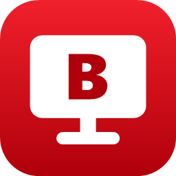
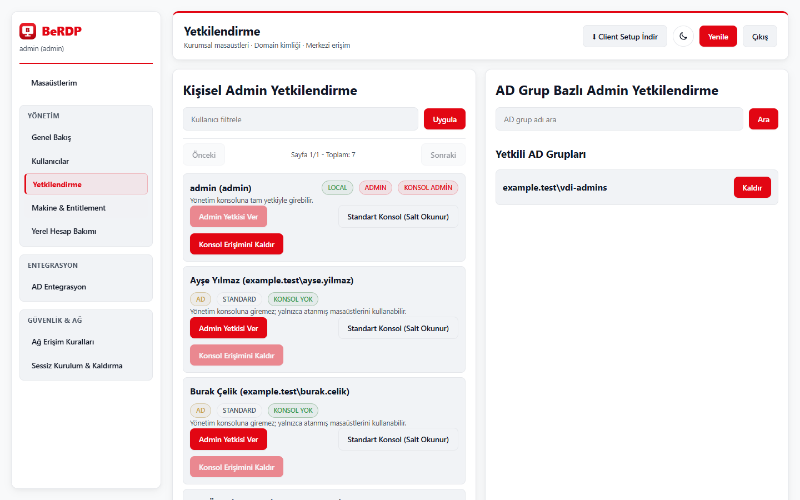
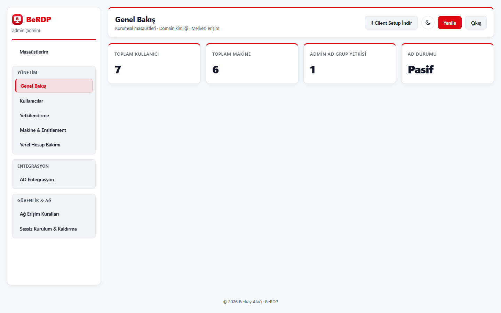
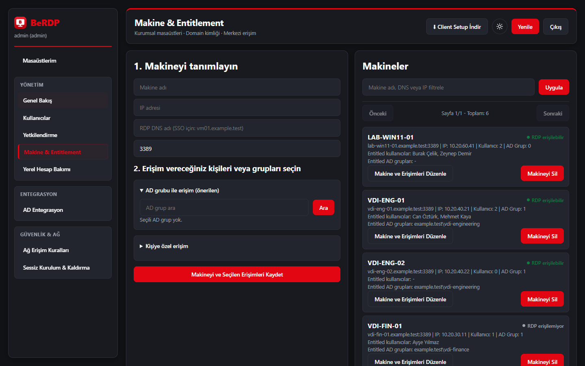
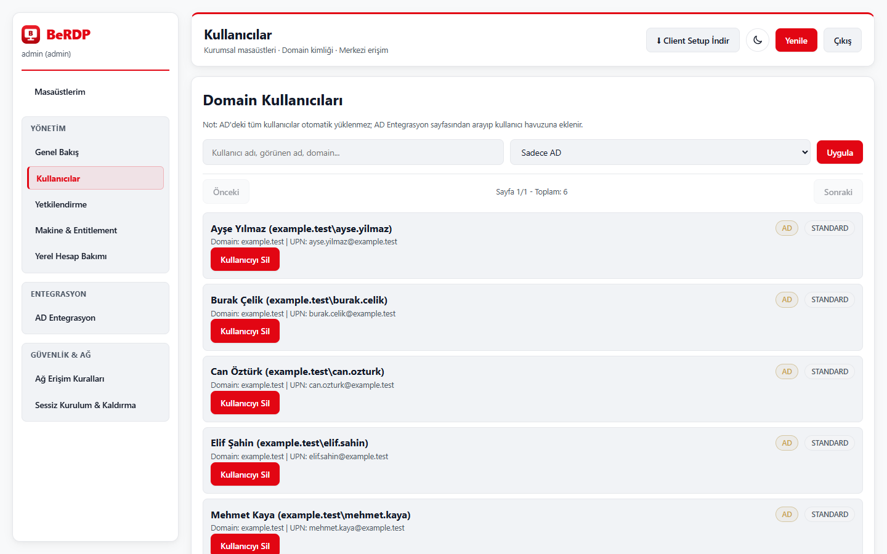

Kimliğe bağlı erişim
Makineleri kişilere veya Active Directory gruplarına atayın. Güncel atama her bağlantıdan hemen önce sunucuda yeniden doğrulanır.

BeRDPby Berkay AtağSürüm 1.7.0 · Windows x64
BeRDP, kurumunuzdaki Windows masaüstlerini, kullanıcıları ve Active Directory grup atamalarını tek konsoldan yönetir. Kullanıcılar Windows'un kendi Uzak Masaüstü istemcisiyle bağlanır; hedef makinelere ajan kurmanız gerekmez.

Ne yapar?
Makineleri kişilere veya Active Directory gruplarına atayın. Güncel atama her bağlantıdan hemen önce sunucuda yeniden doğrulanır.
İstemci yerleşik mstsc ile bağlanır: çoklu ekran, çözünürlük ve yerel kaynak seçimi. Windows'un güvenlik uyarıları korunur.
AD kullanıcılarını ve gruplarını konsoldan arayıp ekleyin. Kerberos ortamında Windows oturumuyla tek tıkla giriş.
Tam yetkili yönetici, salt okunur konsol ve yalnız masaüstü kullanıcısı. AD grubuyla yönetici yetkisi verin; yetki değişikliği bir sonraki istekte geçerlidir.
Varsayılan parola veya demo hesap yok. Servisler yalnız loopback dinler, uzak erişim HTTPS ister, anahtarlar DPAPI ile korunur.
Kendi sunucunuzda barındırın. İsteğe bağlı Apache Guacamole entegrasyonu ile tarayıcıdan RDP erişimi ekleyin.
Güncel tasarım





Kurulum
Her iki kurulum da self-contained'dir; hedef makinede .NET gerekmez. Programlar ve Özellikler'de yayıncı Berkay Atağ olarak, kırmızı BeRDP simgesiyle görünür.
BeRDP.Server.Setup.exe dosyasını çift tıklayın, ilk yönetici kullanıcı adı ve parolasını girip Kur'a basın. Kurulum bitince yönetim konsolu açılır.
Konsolda makineleri ekleyin; kişileri veya AD gruplarını atayın. Kurumsal kullanım için servisleri kendi sertifikanızla HTTPS reverse proxy arkasında yayınlayın.
BeRDP.Client.Setup.exe sunucu adresini sorar; sessiz dağıtım için /VERYSILENT /BACKENDURL="https://berdp.example.test/api" kullanın.
Sunucu ve istemci için ayrı Windows x64 kurulum dosyaları, SHA-256 özetleriyle. Paketler temiz Windows ortamında kurulum, yeniden kurulum ve kaldırma testinden geçtikten sonra yayımlanır.
Kurulum dosyaları Authenticode ile imzalı değildir; SmartScreen uyarısında "Ek bilgi → Yine de çalıştır" seçin. Kurum dağıtımında kendi kod imzalama sertifikanızı kullanın.